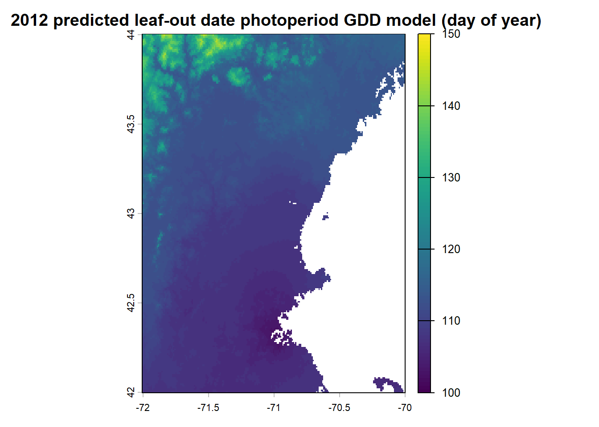
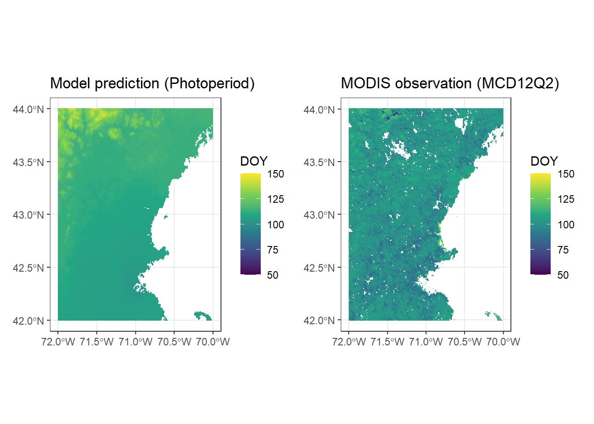

library(geosphere)
library(phenocamr)
library(here)
library(GenSA)
library(dplyr)
library(readr)
library(lubridate)
library(terra)
library(MODISTools)
library(ggplot2)
library(tidyterra)
library(patchwork)
if (!dir.exists(here("data"))) {
dir.create(here("data"))
}Report 8.2: Phenology
Setup
# We define the path to the expected output file
phenocam_file <- here("data", "harvard_DB_1000_3day.csv")
# We only download if the file doesn't already exist
if (!file.exists(phenocam_file)) {
phenocamr::download_phenocam(
site = "harvard$",
veg_type = "DB",
roi_id = "1000",
daymet = TRUE,
phenophase = TRUE,
trim = 2022,
out_dir = here("data")
)
}# Read the data. We use "#" to skip the metadata lines at the top of the file
harvard_phenocam_data <- read_csv(
here("data", "harvard_DB_1000_3day.csv"),
comment = "#"
)
# Create 'harvard_temp' (calculate Tmean)
harvard_temp <- harvard_phenocam_data %>%
mutate(date = as.Date(date)) %>%
mutate(year = as.numeric(format(date, "%Y"))) %>%
group_by(year) %>%
mutate(
tmean = (tmax..deg.c. + tmin..deg.c.) / 2
) %>%
mutate(
gdd = cumsum(ifelse(tmean >= 5, tmean - 5, 0))
) %>%
ungroup() %>%
select(date, year, tmean, gdd)
# Check the result
head(harvard_temp)# A tibble: 6 × 4
date year tmean gdd
<date> <dbl> <dbl> <dbl>
1 2008-01-05 2008 -8.25 0
2 2008-01-06 2008 -1.19 0
3 2008-01-07 2008 3.6 0
4 2008-01-08 2008 7.33 2.33
5 2008-01-09 2008 7.11 4.44
6 2008-01-10 2008 2.17 4.44# Read the data
harvard_phenocam_data_transition <- read_csv(
here("data", "harvard_DB_1000_3day_transition_dates.csv"),
comment = "#"
)
harvard_phenology <- harvard_phenocam_data_transition %>%
# Filter for the start of spring (rising greenness)
filter(direction == "rising", gcc_value == "gcc_90") %>%
# Create the 'year' and 'doy' columns from the date
mutate(
trans_date = as.Date(transition_25), # Convert text to date
year = as.numeric(format(trans_date, "%Y")), # Extract year
doy = as.numeric(format(trans_date, "%j")) # Extract day of year
) %>%
# Select only what we need for the model
select(year, doy, transition_25, threshold_25)
# Check the result
print(head(harvard_phenology))# A tibble: 6 × 4
year doy transition_25 threshold_25
<dbl> <dbl> <date> <dbl>
1 2008 128 2008-05-07 0.390
2 2009 122 2009-05-02 0.390
3 2010 114 2010-04-24 0.390
4 2011 126 2011-05-06 0.393
5 2012 120 2012-04-29 0.397
6 2013 123 2013-05-03 0.395How to improve the model
The model used in chapter 6 is a simple Growing Degree Day (GDD) model. It assumes that temperature is the only driver of spring leaf-out. Once the daily temperature exceeds a base threshold (Tbase), the plant accumulates “heat units.” When the bucket of heat units is full (F∗), leaves appear.
Dormancy
Vegetation have a sleep mode called dormancy to protect themselves from winter. This prevent them to respond to warmth until they have experienced enough cold weather (chilling) to wake up. Including this dormancy parameter prevents the model from predicting leaf-out during warm days in early winter. The heat budget is locked until the cold budget is full.
In order to apply this to the model, we could add a a rule where GDD accumulation only starts after a certain number of cold days have passed.
Soil temperature
The current model uses air temperature but vegetation have roots in the ground which is warming up slower that than air. Roots need to be active to pump water up to the buds before the leaves can expand. If the soil is still frozen, the roots can’t function, even if the air is warm.
The model could be improved by also estimating soil temperature considering that it is often a lagged and damped version of air temperature.
Photoperiod
Temperatures varies greatly year to year but the length of the day is perfectly consistent and vegetation usually use day length like a calendar. It helps the plant distinguish between a warm day in February (short days) and a warm day in May (long days) for example.
We can implement this by modifying the critical threshold (F*). Plants need less heat to leaf out if the days are very long (late spring), but more heat if the days are short (early spring).
The basic GGD model
Here we show the basic GDD model for reference.
gdd_model <- function(par, temp) {
# We unpack the parameters (for readability)
t_base <- par[1] # The base temperature (like 5°C)
f_crit <- par[2] # The critical heat threshold (like 300 GDD)
# We calculate daily heat units (forcing). If temp > t_base, we accumulate heat. If colder, we accumulate 0.
# We use pmax() which is a faster version of ifelse() for vectors.
daily_forcing <- pmax(0, temp - t_base)
# We calculate the state of forcing (cumulative sum). This creates a running total of heat for every day of the year.
accumulated_forcing <- cumsum(daily_forcing)
# We find the trigger day. Leaf-out happens when accumulated heat >= treshold
# We take the first one ([1]) using which().
doy <- which(accumulated_forcing >= f_crit)[1]
return(doy)
}Adding photoperiod
Now we want to improve the model by adding the photoperiod. The concept is that if the days are long (late spring), trees lower their defense mechanisms and need less heat to leaf out.
To implement this, we need two things:
Data: We need to know the day length (in hours) for every day of the year.
Math: We need a formula where longer days make the threshold (Fcrit) smaller.
Photoperiod GDD model
The length of the day depends on latitude and the day of the year. We can use the geosphere package for this.
# The Photoperiod GDD Model
model_photoperiod <- function(par, temp, latitude) {
# We unpack the parameters. Now we have 3 parameters to optimize
t_base <- par[1] # Base temperature
f_crit <- par[2] # Heat treshold
k_photo <- par[3] # Photoperiod sensitivity
# We calculate daily heat units
daily_forcing <- pmax(0, temp - t_base)
# We calculate accumulated heat
accumulated_forcing <- cumsum(daily_forcing)
# We calculate the day length for every day of the year (length of temp vector)
doy_vector <- 1:length(temp)
day_len <- geosphere::daylength(lat = latitude, doy = doy_vector)
# We define the Variable threshold. The threshold changes every day. Longer days = lower threshold.
daily_threshold <- f_crit - (k_photo * day_len)
# We finally find the trigger day.
doy <- which(accumulated_forcing >= daily_threshold)[1]
return(doy)
}The cost function
This function measures how well the model predictions match observation of leaf-out dates. A lower RMSE means a better model fit.
harvard_latitude <- 42.536669726040884
# We define the cost function
rmse_photoperiod <- function(par, data) {
# drivers = temp, validation = observed dates
drivers <- data$drivers
validation <- data$validation
# We run the model for every year in the driver data. This creates a dataframe of "year" and "pred" (predicted doy)
predictions <- drivers %>%
group_by(year) %>%
summarise(
pred = model_photoperiod(
par = par,
temp = tmean,
latitude = harvard_latitude
)
)
# We compare to reality by joining predictions with the 'validation' data (observed 'doy')
comparison <- left_join(predictions, validation, by = "year")
# We calculate the RMSE
rmse <- sqrt(mean((comparison$pred - comparison$doy)^2, na.rm = TRUE))
return(rmse)
}Optimization of the RMSE
# We set up the data for the function
data_for_optim <- list(
drivers = harvard_temp,
validation = harvard_phenology
)
# We define the lower and upper boundaries of the 3 parameters
# T_base, F_crit, k_photo
lower_bounds <- c( 0, 50, 0)
upper_bounds <- c( 10, 500, 20)
# First guess
start_par <- c(0, 200, 5)
# We run the optimization
optim_result <- GenSA(
par = start_par,
fn = rmse_photoperiod, # Our cost function
lower = lower_bounds,
upper = upper_bounds,
control = list(max.call = 4000), # Limit it to 4000 tries
data = data_for_optim
)
# We extract the best parameters
best_pars <- optim_result$par
cat("Optimal parameters:\n")Optimal parameters:cat("T_base:", round(best_pars[1], 2), "\n")T_base: 4.49 cat("F_crit:", round(best_pars[2], 2), "\n")F_crit: 443.57 cat("k_photo:", round(best_pars[3], 2), "\n")k_photo: 19.95 cat("Final RMSE:", round(optim_result$value, 3), "\n")Final RMSE: 4.258 Spatial scaling
Now that we have the optimal parameters we need to apply this model to a map of temperature to observe the predicted leaf-out dates across the New England region. In order to do this we need to download the gridded daily temperature for the region and then run the model_photoperiod function on every pixel of that map. In this section, we used daily temperature data from DAYMET (Thornton et al., 2022), a gridded climate dataset at 1km resolution produced by NASA ORNL DAAC.
# We download the temperature raster data
dest_file <- here("data", "daymet_2012_subset.nc")
if (!file.exists(dest_file)) {
download.file(
url = "https://github.com/fabern/handfull_of_pixels/raw/refs/heads/main/data/DAYMET.004_2012/DAYMET.004_1km_aid0001.nc",
destfile = dest_file,
mode = "wb"
)
}
# We load and prepare the data
r_daymet <- terra::rast(dest_file)
# We set the coordinate reference system
terra::crs(r_daymet) <- "epsg:4326"
# We calculate the Tmean for the map
tmean_map <- (r_daymet["tmax"] + r_daymet["tmin"]) / 2
# We limit to the first 180 days to save processing time because spring phenology happens in the first half of the year
tmean_map <- subset(tmean_map, 1:180)
# We create a latitude raster using terra::init(). When we use "y" as the second argument, it fills each cell with its y-coordinate (which is latitude in our case).
lat_raster <- terra::init(tmean_map[[1]], "y")
# We combine the 2 rasters (temperature and latitude) into one stack of 181 layers in total.
# - Layers 1 to 180: temperature for each day
# - Layer 181: latitude
input_stack <- c(tmean_map, lat_raster)# Now we we define a function to apply to each pixel that terra:app() can use that will receive the vector "x" of length 181.
# The function will:
# 1. Extract temperature (first 180 values)
# 2. Extract latitude (last value)
# 3. Run the model
# 4. Return the prediction
apply_model_to_pixel <- function(x, par) {
# We define the number of days (181-1 = 180) for each latitude
n_days <- length(x) - 1
# We split the vector:
# - Temperature: positions 1 to 180
# - Latitude: position 181
temp <- x[1:n_days]
lat <- x[n_days + 1]
# We filter missing data
if (any(is.na(temp)) || is.na(lat)) {
return(NA)
}
# Run the photoperiod model with each pixel using the correct latitude
doy <- model_photoperiod(
par = par,
temp = temp,
latitude = lat
)
return(doy)
}# We apply the model to every pixel using terra:app()
predicted_map <- terra::app(
x = input_stack,
fun = apply_model_to_pixel,
par = best_pars # We use the optimized parameters from the optimzation step
)
# Check results
cat("\nResults GDD photoperiod model:\n")
Results GDD photoperiod model:cat(" - Min predicted DOY:", round(minmax(predicted_map)[1]), "\n") - Min predicted DOY: 102 cat(" - Max predicted DOY:", round(minmax(predicted_map)[2]), "\n") - Max predicted DOY: 145 # visualization
plot(
predicted_map,
main = " 2012 predicted leaf-out date photoperiod GDD model (day of year)",
range = c(100, 150)
)
Qualitative validation
For the qualitative comparison with the 2012 map of predicted result from our photoperiod model, we used the MODIS MCD12Q2 land cover dynamics product, developed by Boston University. This remote sensing product quantifies land surface phenology at a spatial resolution of 500m the time series of the 2-band Enhanced Vegetation Index (EVI2) derived from MODIS NBAR data. We analyzed the ‘Greenup.Num_Modes_01’ band, which indicates the date of the start of the first vegetation cycle (by dectecting the greenness increase), defined as the point where EVI2 crosses 15% of the seasonal amplitude. The raw data provided in days since 01-01-1970 was converted to Day of Year (DOY) for comparison with our photoperiod model. Fill values (32767) representing water or barren land were filtered out (Friedl et al., 2019).
# We define 3 tiles to cover the full latitude range because the API only allows 100x100km max tile size and we define a list to loop through them.
tiles <- list(
north = list(lat = 44.0, lon = -71.0, file = here("data", "modis_north.csv")),
middle = list(lat = 43.0, lon = -71.0, file = here("data", "modis_middle.csv")),
south = list(lat = 42.0, lon = -71.0, file = here("data", "modis_south.csv"))
)
# We iterate through the list. For every tile, we check if the file already exists.
for (tile_name in names(tiles)) {
tile <- tiles[[tile_name]]
if (!file.exists(tile$file)) {
message(paste("Downloading tile:", tile_name))
subset_data <- MODISTools::mt_subset(
product = "MCD12Q2",
band = "Greenup.Num_Modes_01",
lat = tile$lat,
lon = tile$lon,
start = "2012-01-01",
end = "2012-12-31",
km_lr = 100,
km_ab = 100,
site_name = "NewEngland",
internal = TRUE,
progress = FALSE
)
write_csv(subset_data, tile$file)
}
}# We create a function to use it for every CSV file
process_modis_tile <- function(file_path) {
# Read the CSV
raw <- read_csv(file_path, show_col_types = FALSE)
df <- as.data.frame(raw) # Convert to standard data.frame for MODISTools
# Data cleaning : we filter fill Values (32767 indicates no data)
df$value <- ifelse(df$value > 32766, NA, df$value)
# Date Conversion: The raw data is days since 1970-01-01. So we convert this to a date object, then extract the day of year (DOY)
date_vals <- as.Date("1970-01-01") + df$value
df$value <- as.numeric(format(date_vals, "%j"))
# We filter out spurious spring phenology dates after 200 days
df$value <- ifelse(df$value > 200, NA, df$value)
# We convert to terra raster. We use reproject = FALSE here because we want to merge the tiles in their native projection first to avoid artifacts.
terra_rast <- MODISTools::mt_to_terra(df, reproject = FALSE)
return(terra_rast)
}
# We process all three tiles using the function
r_north <- process_modis_tile(tiles$north$file)
r_middle <- process_modis_tile(tiles$middle$file)
r_south <- process_modis_tile(tiles$south$file)
# We merge the tiles using terra::merge which combines rasters. If they overlap, it takes the value of the first one.
r_modis_merged <- terra::merge(r_north, r_middle, r_south)
# Now that we have one map, we project it to WGS84 (Lat/Lon) so it matches the coordinate system of the photoperiod model.
r_modis_ll <- terra::project(r_modis_merged, "epsg:4326")# We ensure that the photoperiod model has the correct CRS
terra::crs(predicted_map) <- "epsg:4326"
# We crop MODIS to fit the photoperiod model
r_modis_final <- terra::crop(r_modis_ll, predicted_map)
# Plotting
p_model <- ggplot() +
geom_spatraster(data = predicted_map) +
scale_fill_viridis_c(name = "DOY", limits = c(50, 150), na.value = "transparent") +
labs(title = "Model prediction (Photoperiod)") +
theme_bw()
p_modis <- ggplot() +
geom_spatraster(data = r_modis_final) +
scale_fill_viridis_c(name = "DOY", limits = c(50, 150), na.value = "transparent") +
labs(title = "MODIS observation (MCD12Q2)") +
theme_bw()
# Combine plots
p_model + p_modis
# Check results
cat("\nResults MODIS MCD12Q2:\n")
Results MODIS MCD12Q2:cat(" - Min predicted DOY:", round(minmax(r_modis_final)[1]), "\n") - Min predicted DOY: 54 cat(" - Max predicted DOY:", round(minmax(r_modis_final)[2]), "\n") - Max predicted DOY: 145 Discussion
The year 2012 has been an emblematic year for phenology studies. According to Ault et al. (2013) spring 2012 was the earliest on record for the contiguous United States since systematic weather observations began in 1900. March 2012 recorded exceptionally warms temperatures becuase of a very strong and stable high-pressure system. This caused the onset of spring to occurs 20-30 days ahead of climatological expectations across much of the central and eastern United States, including our Boston-New England study region.
The consequence of this is called a “false spring” which brought vegetation out of dormancy prematurely, rendering it vulnerable to subsequent late frost events. Indeed, the unusually early spring of 2012 was followed by damaging but climatically normal hard freezes in April in the Great Lakes region and in the northeast (where our study region is located). So our model is tested on an edge case with very early leaf-out during an extreme year.
Now comparing the MODIS MCD12Q2 satellite observation and the GDD photoperiod model prediction we observe that both products show earlier earlier leaf-out (lower DOY values) in the southeastern coastal areas and later leaf-out (higher DOY values)in the northwestern mountainous regions, which is the expected effect of the altitude.
However, several notable differences exist between the two products:
- Spatial smoothness: The model predictions appear smoother and more continuous, while the MODIS observations show greater variability. This is expected because our model uses gridded climate data (DAYMET) which is itself interpolated, whereas MODIS directly observes each pixel and could be subject to local variations in vegetation composition, land cover heterogeneity, and observation noise.
- Missing data patterns: The MODIS observations show more NA values (blank areas), particularly over water bodies, urban development, or mixed land cover where the phenology algorithm cannot reliably detect vegetation cycles.
- Early leaf-out: The comparison reveals a big difference in the minimum predicted dates: the MODIS product detects greenup as early as DOY 54 (late February) in some pixels, while our photoperiod model earliest prediction is DOY 102 (mid-April). Both products agree on the maximum values (DOY 145), indicating similar predictions for the latest leaf-out in the mountains.
These differences can be explained by the role of photoperiod. As we explained before, a key advantage of incorporating photoperiod into phenology modelsis to prevent abnormally earlier leaf-out due to warm periods with short days because plants use day length as a safety mechanism. However this simple single parameter model is probably according too much weight to the photoperiod mechanism and it’s not flexible enough to produce premature greenups when stable high-pressure systems cause long period of warm temperature in winter.
Another factor that could explain later leaf-out of the model is the heterogeneity of the land cover. Our photoperiod model applies the same parameters (calibrated for deciduous broadleaf forest at Harvard Forest) uniformly across the region. However, the study area contains a mixture of vegetation types including coniferous forests, mixed forests, agricultural lands, and urban areas. Each vegetation type has different phenological characteristics that our single parameter model cannot capture. MODIS, by directly observing surface greenness, inherently accounts for this heterogeneity.
References
Ault, T. R., et al. ‘The False Spring of 2012, Earliest in North American Record’. Eos, Transactions American Geophysical Union, vol. 94, no. 20, May 2013, pp. 181–82. DOI.org (Crossref), https://doi.org/10.1002/2013EO200001.
Friedl, M., Gray, J., & Sulla-Menashe, D. (2019). MCD12Q2 MODIS/Terra+Aqua Land Cover Dynamics Yearly L3 Global 500m SIN Grid V006 [Data set]. NASA Land Processes Distributed Active Archive Center. https://doi.org/10.5067/MODIS/MCD12Q2.006 Date Accessed: 2025-12-04
Thornton, M. M., Shrestha, R., Wei, Y., Thornton, P. E., & Kao, S.-C. (2022). Daymet: Daily Surface Weather Data on a 1-km Grid for North America, Version 4 R1 (Version 4.1). ORNL Distributed Active Archive Center. https://doi.org/10.3334/ORNLDAAC/2129 Date Accessed: 2025-12-13